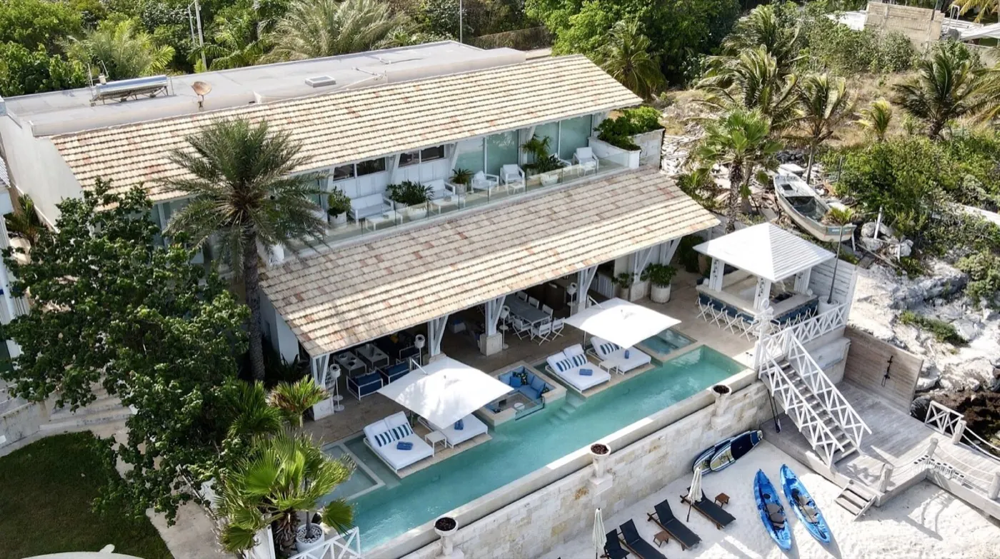
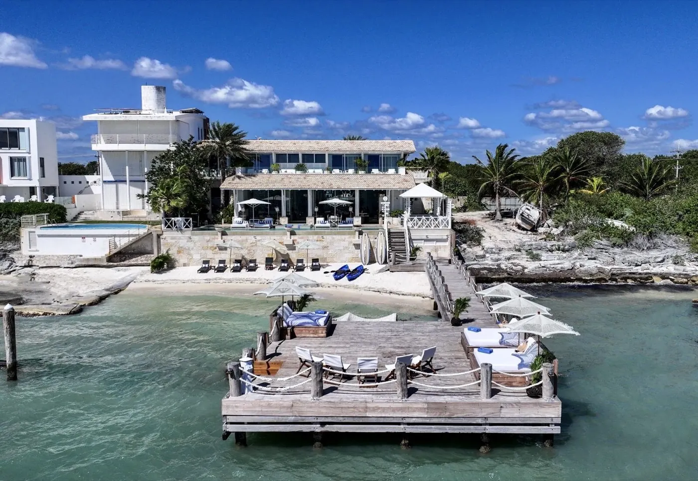
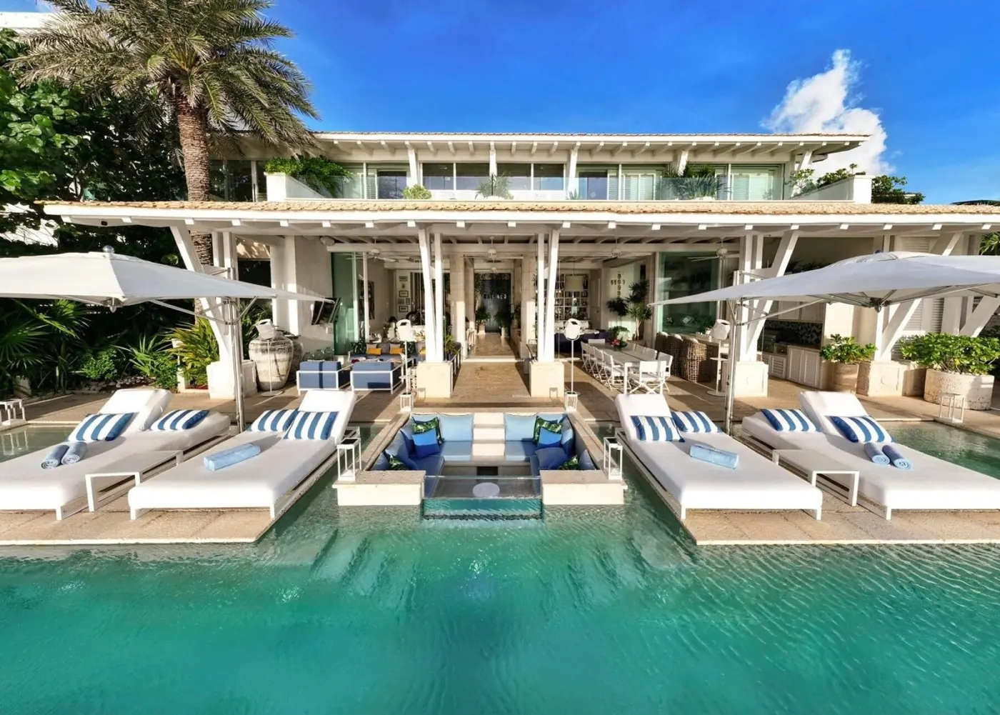
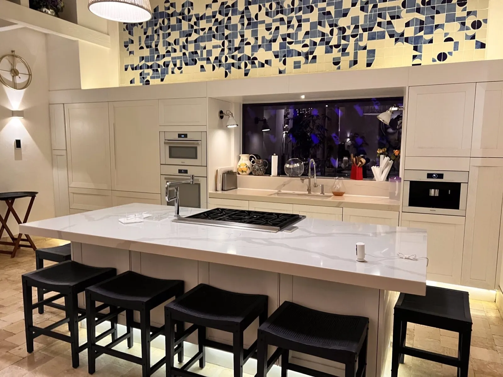

Villa Sha está en la costa norte de Cancún, en Punta Sam, justo frente a Isla Mujeres, un tramo de costa que se ha mantenido tranquilo mientras todo lo que está al sur se llenaba. La casa mira de frente al Caribe, con playa propia, muelle propio y nada entre la terraza y el horizonte. La diseñó Artigas, uno de los despachos de arquitectura más respetados de México, y se nota en la forma en que está organizada. La planta baja se abre casi por completo al exterior: una alberca infinita climatizada a lo largo de la terraza, una sala hundida, una cocina exterior con asador Wolf y un bar frente al mar para doce personas. Adentro, una cocina totalmente equipada con Wolf, Miele y Sub-Zero, un comedor formal, un bar, una sala de TV familiar y espacios que funcionan igual de bien para dieciséis personas que para dos. Seis suites para dieciséis personas con comodidad. La Breeze Suite es la principal: 53 m² con doble regadera de lluvia, tina independiente, terraza privada y acceso directo a la alberca. Todas las suites tienen baño propio con regadera de lluvia, dos tienen además regaderas exteriores y tres tienen tinas hechas a mano. En total, seis baños completos y dos medios baños. La casa funciona con un sistema inteligente Savant, Sonos en todos los espacios interiores y exteriores, y una planta de luz a gas de respaldo. El entorno hace gran parte del trabajo. Yates Van Dutch disponibles para pesca, buceo o una escapada a Playa Norte. El golf y los spas están a minutos en Playa Mujeres, y la academia de tenis de Rafael Nadal está lo bastante cerca como para reservar cancha el mismo día. La zona hotelera de Cancún queda a veinte minutos en una dirección; las playas casi vacías de Isla Blanca, a veinte minutos en la otra.
Zona aproximada. Compartimos la ubicación exacta cuando agendas una visita.
Es lo más raro que tenemos: una casa frente al mar verdaderamente privada, con este nivel de acabados, en un tramo de costa que no se ha urbanizado. La ubicación es irrepetible: Punta Sam mira directo a Isla Mujeres y el terreno llega hasta el agua, con muelle propio. Las cifras de renta son la otra mitad del argumento: estudios comparables la sitúan entre $5,500 y $11,500 USD por noche según la temporada, y la casa ya está preparada para lograrlo: personal completo, sistemas inteligentes y el tipo de especificaciones que sostienen esa tarifa. Los compradores de este nivel suelen elegir entre una residencia de marca y una casa privada. Esta es la casa privada.



